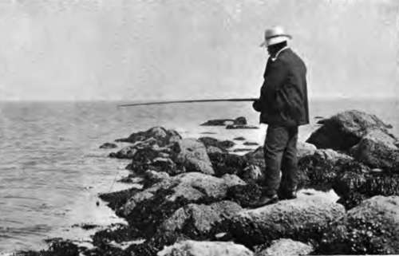

Sea-Fishing From Fixed Positions: Fishing From Rocks. Part 2
Description
This section is from the book "Fishing", by Horace G. Hutchinson. Also available from Amazon: Fishing.
Sea-Fishing From Fixed Positions: Fishing From Rocks. Part 2
Where there is a sandy bottom immediately within the rock-angler's reach, a leger-tackle for flat-fish or whiting will perhaps be found to answer best, but as the principle and management of this tackle will be fully described when reference is made to fishing from sandy beaches, it is not necessary to go into the details here.
Save when fishing from very high rocks, such as those resorted to by my Australian friends when tired of life and anxious to die fishing, a rod should always be used by the rock-fisher, for here, if anywhere, is its legitimate sphere of usefulness. Certainly, the life of the rod would be shortened by using it fifty feet or so above the water, but, unless it be near Aberdeen, where I have not yet had the pleasure of fishing, there are few spots on our coasts where so great an altitude is necessary. If, however, some unusual opportunity should occur of catching large fish from the upper ledge of a lighthouse, or some such position, let the fisherman by all means content himself with a hand-line, and haul his fish into safety as soon as possible without any attempt at playing them. Such fishing must necessarily be directed chiefly towards the requirements of the pot, and sport is then at a discount.
85.- Shoving Off.
86.- Angling The Rocks
While on the subject of rock-fishing, I may perhaps be pardoned if I add a word or two on the chief methods of taking such delicacies as prawns. These, though not perhaps coming very definitely under the rubric of sport, furnish a delicious article of food, and there is, if not actually sport, a very agreeable sensation in carefully hauling the prawn-pots, or examining the shove-net, while a little prawn fishing may be done in the intervals of more serious work.
Most rocky coasts furnish prawns, and if it is added that these are best taken during the spring tides, about three hours after low water, and in the deep pools that lie on the shady side of high rocks, little more need be said as to the when and where. There are two distinct ways of taking prawns Either they may be sought in the hand-net, or baited pots may be set for their capture. The choice is a matter of taste. Those who want to catch prawns and nothing more, and who moreover like the exercise and do not mind the immersion, often to the waist-for these rock pools are apt to be treacherous on a rising tide-will probably choose the hand-net. It has the advantage of being inexpensive, and Ave shillings or less should purchase one of the necessary mesh and strength. The handle should be short, and it is a great advantage, too often overlooked, if the frame on which the net is stretched has a square front instead of the more common rounded one. The reason for this preference is that the prawns have a way, particularly when their home is disturbed, of hugging the side of the rock, from which they have to be scooped by the skilful hand like flies from a wall, and it is impossible to brush the perpendicular side of the rock so close that none shall escape if the net be a round one. There is no great difficulty attaching to this manner of taking prawns beyond a little local knowledge as to the best times and places. Given this, if the prawn fisher bears in mind my simile of brushing flies off a wall, and, further, if he is always careful to work his net from below upwards, and not sideways, he should catch his score or two of fine prawns without fail. August and September are the best months; indeed on many parts of the coast (notably in Devon and Cornwall) these coveted crustaceans appear not to come so close inshore at any other period of the year.
The other method of prawning is more complicated, and consists in setting baited pots. These, with the necessary cork buoys and ropes, may cost about half a guinea apiece, more or less according to the make and material. They are of wire or cane, the latter being, I believe, much better, but also infinitely less portable and therefore unsuited to the requirements of the amateur unless he resides within easy reach of the sea or has his yacht or other boat permanently on the shore. The only other requisites for this prawn fishing are a long-handled boat-hook, for lowering and recovering the pots, and a few small gurnards, about three to each pot, for bait. Gurnards, red or grey, are the only bait that I know to be of much use for prawns, though there are doubtless others. All the commoner kinds of fish, however, such as plaice, whiting, herring, etc., I have tried times and again without result. An infinity of small crabs they certainly attract, but of prawns ne'er a one. One other bait, by the way, I recollect using years ago, and that was ordinary shore crabs, such as those just alluded to. The claws and legs were removed, and a skewer was thrust through the body from shoulder to shoulder. Half-a-dozen of these transfixed in a row used to be considered, not without reason, good enough bait for prawns. The pot being baited, it is quietly and carefully lowered, by hitching the boat-hook in the line, in a dark, deep pool, one on which the sun does not fall direct-indeed, the best catch of prawns will frequently be made between half-past five and half-past six on evenings when the tide is at its highest about eight-and there left. Three or four such pots may be lowered in different pools, and the fisherman may then turn his serious attention to any bass or pollack in the neighbourhood, merely hauling the pots once every ten minutes or so and transferring the prawns to a bag. A lively prawn may now and again be dedicated to the hook if float tackle is being used, and it may score the heaviest pollack of all. The pots are duly lowered again, and in this way a good dish of prawns is sometimes secured without in any way interfering in the other fishing. Quiet is essential to success in prawning by either method. Prawns are among the most shy dwellers in the rock pools, and the least disturbance-and a two-legged ogre suddenly invading their peaceful homes can hardly be regarded as a trifle-is often sufficient to send them scuttling away into deep crannies from which it may be impossible to dislodge them. It is advisable, when wading among the rocks for prawns, to wear an old pair of boots, but these should not be either buttoned or laced. It is not sufficient to protect the sole of the foot only, as some do by wearing sand shoes, for the sides of the pools, which generally bristle with mussels, often give very nasty cuts, and one cannot, in the excitement of prawning, be sufficiently careful to have the ankles efficiently protected. A cut is not, even if deep, generally noticed while the limb is still immersed in the cold water, but the loss of blood may be considerable, and it occasionally happens, particularly if the blood is a little out of order, that such a cut may have long and nasty results, all of which risk may be obviated by wearing old boots as suggested. It is also very necessary, particularly if he whose soul is set on prawns happens to be unable to swim, to keep a continual eye on the rising of the waters.
87.- Close Inshore.
Continue to:
- prev: Chapter XXXII. Sea-Fishing From Fixed Positions: Fishing From Rocks
- Table of Contents
- next: Sea-Fishing From Fixed Positions: Fishing From Rocks. Part 3